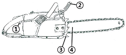
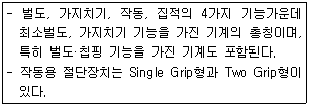

산림기능사 (2013-07-21 기출문제)
1과목: 조림 및 육림기술
1. 밑깍기(下刈)의 가장 중요한 목적은?
- 조림목에 안정된 환경을 만들어주기 위함
- 겨울철에 동해를 방지하기 위함
- 음수 수종의 생장을 도모하기 위함
- 수목의 나이테 나비를 조절하기 위함
(정답률: 86%)

2. 무육작업이라고 할 수 없는 것은?
- 풀베기
- 솎아베기(간벌)
- 가지치기
- 갱신
(정답률: 84%)
3. 다음 중 종자의 용적중이 가장 큰 수종은?
- 풀푸레나무
- 낙엽송
- 복자기나무
- 소나무
(정답률: 45%)
4. 묘목을 심을 때 뿌리를 잘라주는 주된 목적은?
- 식재가 용이하다.
- 양분의 소모를 막는다.
- 수분의 소모를 막는다.
- 측근과 세근의 발달을 도모한다.
(정답률: 88%)
5. 산벌작업의 특성에 대한 설명으로 가장 옮은 것은?
- 약간 음수성을 띤 수종에 알맞은 작업종이고 갱신이 짧다.
- 약간 음수성을 띤 수종에 알맞은 작업종이고 갱신이 비교적 오래 걸린다.
- 약간 양수성을 띤 수종에 알맞은 작업종이고 갱신이 비교적 오래 걸린다.
- 약간 양수성을 띤 수종에 알맞은 작업종이고 갱신이 짧다.
(정답률: 46%)
6. 다음 중 조림수종의 선택조건에 맞지 않는 것은?
- 가지가 굵고 긴 나무
- 입지 적응력이 큰나무
- 위해(危害)에 대하여 적응력이 큰나무
- 성장속도가 빠른 나무
(정답률: 84%)
7. 노천매장법 중 파종하기 한 달쯤 전에 대장하는 것이 발아촉진에 도움을 주는 수종은?
- 백합나무
- 측백나무
- 옻나무
- 가래나무
(정답률: 44%)
8. 다음 중 정선종자의 수율이 가장 높은 수종은?
- 가문비나무
- 소나무
- 편백
- 전나무
(정답률: 32%)
9. 산벌작업의 순서로 옳은 것은?
- 후벌 → 예비벌 → 하종벌
- 하종벌 → 후벌 → 예비벌
- 하종벌 → 예비벌 → 후벌
- 예비벌 → 하종벌 → 후벌
(정답률: 89%)
10. 모수작업법에 대한 설명으로 옳은 것은?
- 임지를 정비해줌으로써 노출된 임지의 갱신이 이루어질 수 있다.
- 벌채가 집중되므로 경비가 많이 든다.
- 종자의 비산능력을 갖추지 않은 수종도 가능하다.
- 토양의 침식과 유실 우려가 거의 없다.
(정답률: 62%)
11. 묘목의 특수식재 중 친근성이며 직근이 빈약하고 측근이 잘 발달된 가문비나무 등과 같은 수종의 어린 노지 묘를 식재할 때 사용되는 방법은?
- 봉우리 식재
- 치식
- 용기묘 식재
- 대묘식재
(정답률: 58%)
12. 묘목의 관리 중 솎기작업의 설명으로 틀린 것은?
- 낙엽송, 삼나무, 편백 등은 2~3회 솎기작업을 한다.
- 소나무류, 전나무류 등은 1~2회 나누어 실시한다.
- 솎기 시기는 본엽이 나온 때와 8월 하순경에 실시한다.
- 솎기작업을 한 후에는 관수할 필요가 없다.
(정답률: 84%)
13. 2ha의 임야에 밤나무를 4m 간격의 정방형 식재를 하려면 얼마의 밤나무 묘목이 필요한가?
- 250 본
- 750 본
- 1250 본
- 2250 본
(정답률: 87%)
14. 전체 나무 중 우량목과 불량목의 비율이 어느 정도 되어야만 그 임분은 좋은 채종림이라 할 수 있는가?
- 우량목 30%이상, 불량목 15% 이하
- 우량목 40% 이상, 불량목 15% 이하
- 우량목 50% 이상, 불량목 20% 이하
- 우량목 70% 이상, 불량목 20% 이하
(정답률: 72%)
15. 숲 가꾸기와 관련된 설명으로 옳은 것은?
- 풀베기는 대개 9월 이후에도 실시한다.
- 풀베기는 조림목의 수고가 50㎝ 이상이 되도록 한다.
- 제벌은 겨울철에 실시하는 것이 좋다.
- 덩굴치기에 있어서 칡의 제거는 줄기절단보다 약제 처리가 효과적이다.
(정답률: 76%)
16. 대목이 비교적 굵고 접수가 가늘 때 적용되는 접목법은?
- 박접
- 절접
- 복접
- 할접
(정답률: 67%)
17. 다음 수종 중 측면맹아력이 가장 강한 수종은?
- 잣나무
- 아까시나무
- 낙엽송
- 소나무
(정답률: 80%)
18. 일반적인 간벌 순서로 옳은 것은?
- 간벌목 선정 → 답사 → 별도 → 뒷손질
- 답사 → 간벌목선정 → 벌도 → 뒷손질
- 답사 → 간벌목 선정 → 뒷손질 → 벌도
- 간벌목 선정 → 뒷손질 → 답사 → 벌도
(정답률: 82%)
19. 유실수의 밤나무는 보통 1ha 당 몇 본을 식재하는가?
- 400본
- 800본
- 1200본
- 3000본
(정답률: 74%)
20. 선천적 유전 형질에 의해서 삽수의 발근이 대단히 어려운 수종은?
- 향나무
- 밤나무
- 사철나무
- 동백나무
(정답률: 63%)
21. 채집된 종자를 건조시킬 때 음지 건조를 시켜야하는 수목종자를 바르게 짝지어진 것은?
- 소나무류, 해송
- 낙엽송, 전나무
- 참나무류, 편백
- 회양목, 소나무류
(정답률: 44%)
22. 질소의 함유량이 20%인 비료가 있다. 이 비료를 80g 주었을 때 질소성분량으로는 몇 g을 준 셈이 되는가?
- 8g
- 16g
- 20g
- 80g
(정답률: 83%)
23. 다음 중 가지치기의 단점으로 틀린 것은?
- 나무의 성장이 줄어들 수 있다.
- 부정아가 발생한다.
- 작업상 노무문제가 있다.
- 무절재를 생산한다.
(정답률: 49%)
24. 대면적 개벌법에 의한 갱신 시 소나무의 종자비산거리로 옳은 것은?
- 모수 수고의 1~3배
- 모수 수고의 3~5배
- 모수 수고의 4~6배
- 모수 수고의 5~7배
(정답률: 61%)
25. 소나무 천연림의 나이가 어릴 때 보육의 궁극적인 목표는?
- 우량 용재 생산
- 땔감, 표고 용재
- 송이 생산
- 휴양 풍치림
(정답률: 80%)
2과목: 산림보호
26. 솔나방의 방제방법으로 틀린 것은?
- 4월 중순~6월 중순과 9월 상순~10월 하순에 유충이 솔잎을 가해할 때 약제를 살포한다.
- 6월 하순부터 7월 중순 고치속의 번데기를 집게로 따서 소각한다.
- 솔나방의 기생성 천적이 발생할 수 있도록 가급적 단순림을 조성한다.
- 성충 활동기에 피해 임지에 수온등을 설치한다.
(정답률: 65%)
27. 한상(寒傷)에 대한 설명으로 옳은 것은?
- 식물체의 조직 내에 결빙현상은 발생하지 않지만 저온으로 인해 생리적으로 장애를 받는 것이다.
- 온대식물에 피해를 가장 받기 쉽다.
- 저온으로 인해 식물체 조직 내에 결빙현상이 발생하여 식물체를 죽게 한다.
- 한겨울 밤 수액이 저온으로 인해 얼면서 부피가 증가할 때 수간이 갈라지는 현상이다.
(정답률: 70%)
28. 다음 수병 중 자낭균에 의해 발생되지 않는 것은?
- 그을음병
- 탄저병
- 흰가루병
- 모잘록병
(정답률: 51%)
29. 녹병균에 의한 수병은 중간기주를 거쳐야 병이 전염된다. 다음 수종 중 소나무잎녹병의 중간기주는?
- 오리나무
- 포플러
- 황벽나무
- 사과나무
(정답률: 70%)
30. 살충제의 보조제에 대한 설명으로 틀린 것은?
- 협력제는 주제(主劑)의 살충력을 증진시키는 약제이다
- 중량제는 주약제의 농도를 높이기 위하여 사용되는 약제이다.
- 유화제는 유체의 유화성을 높이기 위하여 사용되는 물질이다.
- 전착제는 해충의 표면에 살포액이 잘 부착하도록 하기 위하여 사용되는 약제이다.
(정답률: 61%)
31. 미국흰불나방의 월동 형태는?
- 성충
- 알
- 유충
- 번데기
(정답률: 62%)
32. 마름무늬매미충이 매개하지 않는 병은?
- 대추나무빗자루병
- 뽕나무오갈병
- 오동나무빗자루병
- 붉나무빗자루병
(정답률: 33%)
33. 소나무혹병의 중간기주는?
- 송이풀
- 참취
- 황벽나무
- 졸참나무
(정답률: 65%)
34. 임업적인 방법으로 피해를 예방하는 것은?
- 혼효림 조성
- 페로몬 이용
- 식물검역 제도
- 천적방사
(정답률: 79%)
35. 수목의 가지에 기생하여 생육을 저해하고 종자는 새가 옮기는 것은?
- 바이러스
- 세균
- 재성충
- 겨우살이
(정답률: 77%)
36. 다음 중 잎을 가해하지 않는 해충은?
- 솔나방
- 미국흰불나방
- 복숭아 명나방
- 오리나무잎벌레
(정답률: 69%)
37. 알에서 부화한 곤충이 유충과 번데기를 거쳐 성충으로 발달하는 과정에서 겪는 형태적 변화를 뜻하는 용어는?
- 우화
- 변태
- 휴면
- 생식
(정답률: 75%)
38. 유충과 성충 모두가 나무 잎을 식해하고 성충으로 활동하는 해충은?
- 참나무재주나방
- 오리나무잎벌레
- 어스렝이나방
- 잣나무 넓적 잎벌
(정답률: 77%)
39. 다음 중 같은 뜻을 가진 용어로 연결된 것은?
- 절대기생체 - 사물영양성
- 비절대기생체 - 반활물영양성
- 임의기생체 - 조건적부생체
- 임의부생체 - 조건적기생체
(정답률: 52%)
40. 1988년 부산에서 처음 발견된 소나무재선충에 대한 설명으로 틀린 것은?
- 매개충은 솔수염하늘소이다.
- 피해고사목은 벌채 후 매개충의 번식처를 없애기 위하여 임지 외로 반출한다.
- 소나무재선충은 매개충의 후식 상처를 통하여 수체내로 이동해 들어간다.
- 매개충의 유충은 자라서 터널 끝에 번데기방 (용실, 蛹室)을 만들고 그 안에서 번데기가 된다.
(정답률: 74%)
3과목: 임업기계일반
41. 4행정 기관과 비교한 2 행정 기관의 설명으로 틀린 것은?(오류 신고가 접수된 문제입니다. 반드시 정답과 해설을 확인하시기 바랍니다.)
- 구조가 간단하다.
- 무게가 가볍다.
- 오일소비가 적다.
- 폭발음이 적다.
(정답률: 37%)
42. 체인톱니의 깊이 제한부가 높게 연마되면 어떠한 현상이 발생하는가?
- 작업시간이 짧아진다.
- 기계의 수명에는 하등 관계가 없다.
- 인체에는 아무런 영향을 주지 않는다.
- 절삭량이 적어진다.
(정답률: 78%)
43. 내연기관의 동력전달장치가 아닌 것은?
- 케네팅로드(connecting rod)
- 플라이휠(fly wheel)
- 크랭크축(crankshaft)
- 밸브개폐장치
(정답률: 77%)
44. 플라스틱 수라에 대한 설명으로 틀린 것은?
- 플라스틱 수라에 최소 종단경사는 15~20%가 되어야 한다.
- 집재지 가까이에서의 경사는 30% 이가 안전하다.
- 수라를 설치하기 위한 첫 단계로 집재선을 표시한다.
- 수라 설치 시 집재선 양쪽 옆의 나무나, 잘린나무 그루터기에 로프를 이용하여 팽팽하게 잡아 당겨 잘 묶어 놓는다.
(정답률: 55%)
45. 가선집재 장비 중 Koller K - 300의 상향 최대집재거리로 옳은 것은?
- 300m
- 400m
- 500m
- 600m
(정답률: 73%)
46. 나무를 벌목할 때 사용하는 도구만을 나열한 것은?
- 보육낫, 쐐기, 목재돌림대, 지렛대
- 쐐기, 목재돌림대, 지렛대, 도끼, 사피
- 목재돌림대, 지렛대, 도끼, 가지치기톱
- 지렛대, 도끼, 재래식괭이, 손톱
(정답률: 62%)
47. 일반적으로 예불기는 연료를 시간당 몇 리터(L)를 소모되는 것으로 보고 준비하는 것이 좋은가?
- 0.5L
- 2L
- 5L
- 10L
(정답률: 75%)
48. 벌목한 나무를 체인톱으로 가지치기 시 유의사항으로 틀린 것은?
- 안내판이 짧은 경체인톱을 사용한다.
- 작업자는 벌목한 나무와 최대한 멀리 떨어져 작업 한다
- 안전한 자세로 서서 작업한다.
- 체인톱은 자연스럽게 움직여야 한다.
(정답률: 80%)
49. 다음 그림은 체인톱의 각 부분의 구조이다. 번호③ 스파이크(지레발톱)에 대한 설명이 올바른 것은?

- 벌도목 가지치기 시 균형을 잡아준다.
- 기계톱을 조종하는 앞손잡이다.
- 나무를 절삭하며, 보통 안전용 체인덮개로 보호한다.
- 정확히 작업을 할 수 있도록 지지역할 및 완충과 받침대 역할을 한다.
(정답률: 80%)
50. 기계톱 일일정비의 대상이 아닌 것은?
- 에어필터(공기청정기) 청소
- 안내판 손질
- 휘발유와 오일의 혼합
- 스파크플러그 전극 간격 조정
(정답률: 82%)
51. 예불기 작업 시 유의사항으로 틀린 것은?
- 작업 전에 기계의 가동점검을 실시한다.
- 발끝에 톱날이 접촉되지 않도록 한다.
- 주변에 사람이 있는지 확인하고 엔진을 시동한다.
- 작업원간 상호 3m 이상 떨어져 작업한다.
(정답률: 82%)
52. 체인톱의 일상점검 내용이 아닌 것은?
- 나사류의 느슨함, 외관상태 점검·수리
- 적정한 체인오일 토출량 확인
- 점화플러그 전극의 간격 조정
- 체인의 장력조절
(정답률: 82%)
53. 트랙터의 주행 장치에 의한 분류 중 크롤러 바퀴의 장점이 아닌 것은?
- 견인력이 크고 접지면적이 커서 연약지반, 험한 지형에서도 주행성이 양호하다.
- 무게가 가볍고 고속주행이 가능하여 기동성이 있다.
- 회정반지름이 작다.
- 중심이 낮아 경사지에서의 작업성과 등판력이 우수하다.
(정답률: 68%)
54. 산림 작업도구의 능률에 대한 틀린 것은?
- 자루의 길이는 적당히 길수록 힘이 세어진다.
- 도구날의 끝각도가 작을수록 나무가 잘 빠개진다.
- 도구는 적당한 무게를 가져야 힘이 세어진다.
- 자루가 너무 길면 정확한 작업이 어렵다.
(정답률: 72%)
55. 우리나라의 임업기계화 작업을 위한 제약인자가 아닌 것은?
- 험준한 지형조건
- 풍부한 전문기능인
- 기계화 시업의 경험부족
- 영세한 경영규모
(정답률: 74%)
56. 2 행정 내연기관에서 연료에 오일을 첨가시키는 가장 큰 이유는?
- 정화를 쉽게 하기 위하여
- 엔진 내부에 윤활작용을 시키기 위하여
- 엔진 회전을 저속으로 하기 위하여
- 체인의 마모를 줄이기 위하여
(정답률: 84%)
57. 구입비가 30, 000, 000원인 트랙터의 매년 일정액의 감가상각비를 구하면? (단, 잔존가격은 취득원가의 10%이고 상각율은 0.2이며, 정액법을 이용하여 계산한다.)
- 1, 000, 000원
- 2, 500, 000원
- 4, 500, 000원
- 5, 400, 000원
(정답률: 59%)
58. 다음 설명에 해당하는 임업기계는?

- 펠러번처
- 프로세서
- 포워더
- 하베스터
(정답률: 64%)
59. 벌목 중 나무에 걸린 나무의 방향전환이나 벌도목을 돌릴 때 사용되는 작업 도구는?
- 쐐기
- 식혈봉
- 박피삽
- 지렛대
(정답률: 84%)
60. 기계톱의 연료배합 시 휘발유 20L에 필요한 엔진오일의 양은?
- 0.2L
- 0.4L
- 0.6L
- 0.8L
(정답률: 75%)